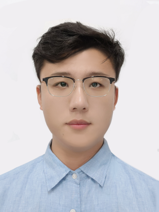

Peiang Zhao (赵沛昂)
|  | M.Sc Student |
Biography
Hi😊, nice to meet you!
Currently I am a M.Sc student of University of Science and Technology of China (USTC) and USTC Suzhou Institute for Advanced Research, and a member of Medical Imaging, Robotics, Analytic Computing & Learning (MIRACLE) Group, advised by Prof. S. Kevin Zhou.
I was a research assistant at IDEA Lab, working closely with Prof. Chunhua Li and Hai Min during my undergraduate years.
My research interests are but not limited to Medical Image Computing and AI for Healthcare. My recent work focuses on diffusion model for high-end medical image synthesis and MedCLIP. If you are also interested, please feel free to contact me. I enjoy building beautiful things, such as photography and painting. I have over 50,000 followers on Pixiv and DeviantArt. M.Sc., Electronic and Information Engineering, University of Science and Technology of China, 2022.09-Present B.E., Computer Science and Technology, Hefei University of Technology, 2018.09-2022.06 [2022.09] I start to pursue my M.Sc. at University of Science and Technology of China. [2022.06] I graduated with a Bachelor's Honours Degree! Medical Image Computing AI for Content Generation Vision-Language Intelligence Computer Vision Diffusion Model for High-end Medical Image Synthesis Uncertainty in Deep Learning MedCLIP Several works are submitted to MICCAI 2023! Reviewer CAD & Graphics IEEE Access Outstanding Graduate, Hefei University of Technology, 06.2022 First-Class Scholarship, Hefei University of Technology, 09.2021 & 09.2020 2nd Prize, National Intelligent Car Race for Colledge Students (全国大学生智能汽车竞赛), Chinese Association of Automation, 08.2021 & 11.2020 3rd Prize, “China Software Cup” Software Developing Contest (中国软件杯全国大学生软件设计竞赛), Ministry of Industry and Information Technology, 08.2021 1st Prize, Competition of Embedded Systems of Anhui Province (安徽省机器人竞赛-嵌入式系统赛道), Ministry of Industry and Information Technology, 05.2019 Grand Prize (1st place), National English Competition for College Students, TEFL China, 11.2020 Deputy Director of IDEA Lab, Hefei University of Technology, 05.2019-06.2022 Teaching Assistant, Hefei University of Technology, 09.2021-06.2022 Research Intern, SLAM Group, MEGVII Research, 05.2021-11.2021 Investigate pre-training of 3D point-cloud segmentation model to help improve the accuracy of downstream tasks. Research Assistant, Space Environment Prediction Center, National Space Science Center, 07.2021-09.2021 Investigate autonomous systems in sattelite control. Developer Intern, Computer Vision Group, FITSCO Shanghai, 06.2020-08.2020 Participated in development of Rail Intrusion Detection System. The system is utilized in Suzhou Rail Transit. Research Assistant, IDEA Lab, Hefei University of Technology, 03.2020-12.2020 Investigate embedded systems in robotics. Assist in development of a UAV-based power line inspection system.Education
NEWS
Research
Interests
Current Work
Recent Publications
Academic Service
Accomplishments
Awards
Activities
Work Experience